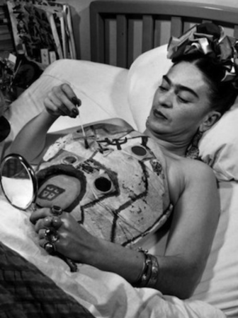

La artista mexicana Frida Kahlo tuvo una vida difícil, llena de amor y dolor, y sus obras de arte lo expresan en cada pincelada; siempre será recordada como la mujer que, a pesar de la desgracia, dejó un legado impresionante en el arte nacional y mundial. Frida no sólo plasmó su sentir en las pinturas que realizó a lo largo de su vida sino que lo hizo en textos y frases que escribía al azar en diarios, piezas, cartas o simples papeles.
|
Frida Kahlo era conocida por su estilo único de vestir. A menudo usaba vestidos tradicionales mexicanos, como los huipiles y las faldas largas, así como tocados de flores en su cabello. Esta elección de vestuario era una afirmación de su herencia cultural y su identidad mexicana. |
|
A raíz de las secuelas de su accidente de autobús, Frida Kahlo tuvo que usar corsés y aparatos ortopédicos durante gran parte de su vida. Uno de los más famosos es su "monobrás" o corsé de yeso, que pintó y decoró con motivos coloridos y simbólicos. Estas piezas se han convertido en una parte icónica de su imagen. |
 |
|
Su obra a menudo exploraba temas relacionados con la identidad de género, la sexualidad y la opresión de las mujeres. Hoy en día, se la considera una de las pioneras del arte feminista. |